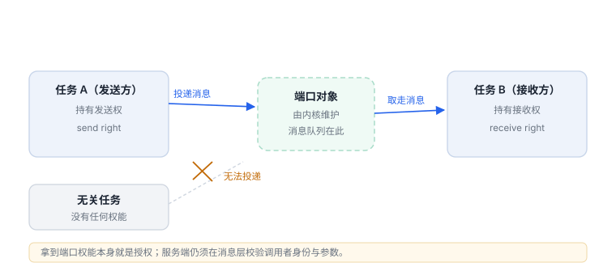
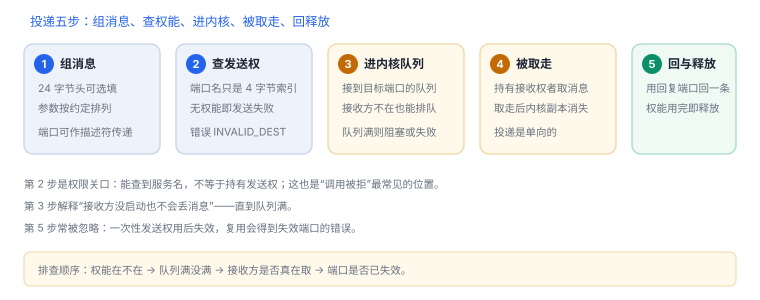

Mach IPC 与端口
端口是内核对象，权能是通行证；消息头里写清了长度、目的端口与编号
Mach IPC 不是“发个结构体”，而是拿着权能往一个内核对象投递消息。谁能发、谁能收、消息多长、编号是什么，全部由内核检查，这也是它天然带访问控制的原因。
1. 四种权能
| 权能 | 能做什么 | 典型来源 |
|---|---|---|
| 发送权 | 向端口投递消息 | 查找服务、从父进程继承 |
| 接收权 | 从端口取走消息 | 创建端口、显式转移 |
| 一次性发送权 | 只能发一次，发完即失效 | 回复通道 |
| 死名 | 端口已销毁，仅作为状态通知 | 对端退出后 |
权能保存在任务自己的命名空间里：同一个端口在不同任务中是不同的名字，名字本身没有意义，权能才有。

2. 消息头：五个字段决定投递
| 字段 | 作用 | 易错点 |
|---|---|---|
msgh_bits | 标志位与权能类型（远程/本地） | 发送/接收位写反会直接返回错误 |
msgh_size | 整条消息长度 | 必须包含头部，且对齐 |
msgh_remote_port | 目的端口 | 不是“地址”，是权能名 |
msgh_local_port | 期望的回复端口 | 可为空 |
msgh_id | 消息编号，由服务端解释 | 相当于“接口号”，不是长度 |
消息可以携带端口权能（端口描述符）：发送时可以“复制发送权”或“转移接收权”。因此一次 IPC 可能同时传递数据与能力。

3. 名字查找
应用通常不直接持有系统服务的接收权，而是通过引导端口按名字查找：服务在启动时把自己注册进命名空间，调用方用名字换到发送权。查不到就是“服务不存在”，与网络错误完全不同。
4. 代码骨架
C：查找服务并发送一条消息
#include <mach/mach.h>
#include <servers/bootstrap.h>
mach_port_t service = MACH_PORT_NULL;
kern_return_t kr = bootstrap_look_up(bootstrap_port, "com.example.service", &service);
if (kr != KERN_SUCCESS) return; // 服务不存在或无权限
struct { mach_msg_header_t hdr; uint32_t value; } msg = {0};
msg.hdr.msgh_bits = MACH_MSGH_BITS(MACH_MSG_TYPE_COPY_SEND, 0);
msg.hdr.msgh_size = sizeof(msg);
msg.hdr.msgh_remote_port = service;
msg.hdr.msgh_id = 1001;
msg.value = 42;
kr = mach_msg(&msg.hdr, MACH_SEND_MSG, sizeof(msg), 0,
MACH_PORT_NULL, MACH_MSG_TIMEOUT_NONE, MACH_PORT_NULL);服务端要做三件事：校验消息长度与编号、校验调用者上下文、在失败时返回明确错误。只按 msgh_id 分派而不校验参数，是把 IPC 当成不可信输入的反面教材。
权能就是授权
持有接收权的进程才能取消息，持有发送权的进程才能投递；因此“把接收权传给谁”本身就是一次授权决定，比任何参数校验都更靠前。
持有接收权的进程才能取消息，持有发送权的进程才能投递；因此“把接收权传给谁”本身就是一次授权决定，比任何参数校验都更靠前。
5. 信任边界
| 面 | 风险 | 控制 |
|---|---|---|
| 权能扩散 | 把接收权传给不该有的进程 | 最小权限，用完销毁 |
| 消息格式 | 长度/字段越界 | 服务端按不可信输入校验 |
| 身份判断 | 用 pid/名字冒充调用方 | 依赖内核提供的调用上下文 |
| 重放 | 同一消息重复提交 | 幂等键与序号 |
6. 失败分流
| 返回值 | 含义 | 查哪里 |
|---|---|---|
MACH_SEND_INVALID_DEST | 目的端口无权能或已失效 | 权能是否被转移/销毁 |
MACH_RCV_TIMED_OUT | 等不到回复 | 服务端是否处理、超时设置 |
bootstrap_look_up 非 0 | 服务未注册 | 名字拼写、服务是否启动 |
| 收到死名通知 | 对端已退出 | 重连策略 |
7. 数据细节：消息头到底多大
| 字段 | 大小 | 作用 |
|---|---|---|
msgh_bits | 4 字节 | 标志位与权能类型 |
msgh_size | 4 字节 | 整条消息长度 |
msgh_remote_port | 4 字节 | 目的端口名 |
msgh_local_port | 4 字节 | 回复端口 |
msgh_id | 4 字节 | 接口号 |
msgh_reserved | 4 字节 | 对齐保留 |
合计 24 字节。端口名是 4 字节整数而不是地址——这也是为什么“猜端口名”没有意义，只有权能有效。
8. 一次真实排查记录：查服务返回 unknown service
- 现象：
bootstrap_look_up返回非 0，服务调用根本没发出去。 - 先确认名字：服务名区分大小写，且必须与注册时完全一致。
- 再确认时机：服务尚未启动时查找必然失败，需要重试或等待。
- 核对上下文：不同命名空间看到的服务集合不同，沙盒应用与系统进程并不一致。
- 结论与限制：记录“服务未注册或不在同一命名空间”，并注明结论只对该启动阶段成立。
实机输出：系统作业列表（macOS）
PID Status Label
7714 0 application.com.example.agent.7f3a1c
- 0 com.apple.SafariHistoryServiceAgent
- -9 com.apple.cloudphotod读法：PID 为 - 表示当前未运行（按需启动）；Status 是上次退出码，负数多为被信号终止。Label 是名字空间里的键，客户端按它查服务——这正是上一节“名字 → 端点”的实际形态。
9. 自测
- 为什么“端口名”在不同任务中不能通用？
msgh_id与msgh_size各自回答什么问题？- “能拿到发送权”为什么已经是一种授权？
- 服务端为什么不能只用
msgh_id决定是否执行操作？